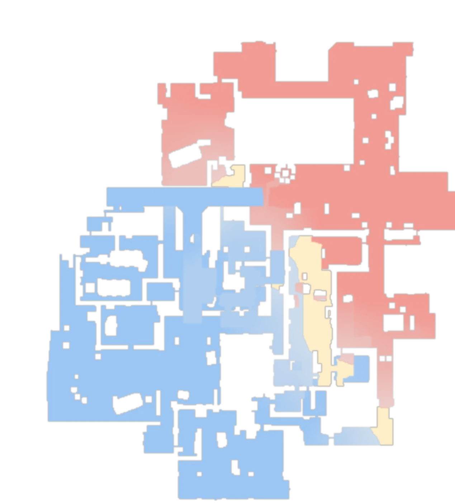
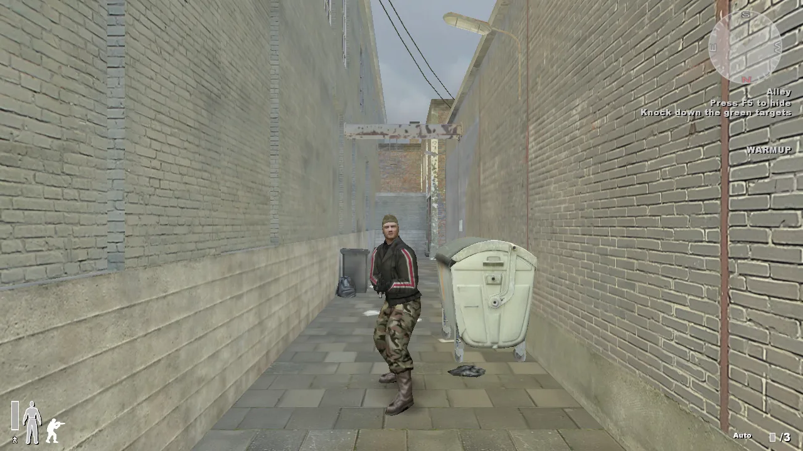

Stadtrand
Wąskie ceglane uliczki na skraju miasta, ze śmietnikami, tylnymi drzwiami i schodami przeciwpożarowymi. We mgle każdy róg jest tuż obok.

- Plik
- obj_stadtrand
- Sceneria
- Obrzeża miasta
- Światło
- Mgła
- Strefy bomby
- A (Main Storage), B (Southern Depot)
- Flagi
- Jedna na drużynę
- Punkty odrodzenia
- 41 dla terrorystów, 40 dla SpecOps
- Nazwy miejsc
- 14
- Tryby gry
- Wszystkie siedem
Plan mapy
Widok z góry narysowany na podstawie oryginalnego pliku mapy, z punktami odrodzenia, strefami bomby i flagami, których używa gra, oraz jej własnymi nazwami miejsc.
- Odrodzenie terrorystów
- Odrodzenie SpecOps
- Terroryści pierwsi
- SpecOps pierwsi
- Obie drużyny naraz
Czas biegu od spawnu
| Czas biegu od spawnu | Terroryści | SpecOps |
|---|---|---|
| Punkt A | 11 s | 5 s |
| Punkt B | 13 s | 2 s |
| Czas biegu od spawnu | Terroryści | SpecOps |
|---|---|---|
| Flaga wroga | 18 s | 15 s |
Sekundy od świeżego spawnu: sprint na pełnym pasku wytrzymałości, potem bieg, najkrótszą trasą pieszą. Bez skoków i drabin.


Poznaj Stadtrand w 3D
Prawdziwa mapa, zbudowana z pliku mapy gry z jej wypalonym oświetleniem. Przeciągnij, aby obrócić, prawym przyciskiem lub z Shift, aby przesunąć, kółkiem, aby przybliżyć. Klawiatura: strzałki obracają, Shift i strzałki przesuwają, + i - przybliżają, R resetuje.
Nazwy miejsc na Stadtrand
To nazwy, które sama gra nadaje każdej części mapy Stadtrand. Używaj ich, gdy podajesz pozycję, a każdy na serwerze będzie wiedział, o które miejsce chodzi.
- Alley
- Bridge
- Canal Tunnel
- Eastern Canal
- Factory Building
- Factory Demolition Site
- Leyd Logistik Building
- Leyd Logistik Loading Bay
- Leyd Logistik Rear Entrance
- Pizza
- Refinery Cellar
- Residential Area
- Warehouse Loading Bay
- Western Canal
Gra na Stadtrand
- Bomb. Terroryści podkładają bombę w strefie A (Main Storage) lub w strefie B (Southern Depot), a SpecOps bronią albo rozbrajają. W linii prostej obie strefy leżą bliżej punktu odrodzenia SpecOps: strefa B jest bliższa, a strefa A dalsza.
- Flag Capture. Każda drużyna pilnuje plecaka w pobliżu własnego punktu odrodzenia. Ukradnij plecak wroga i zanieś go do bazy. Wygrywa drużyna, która pierwsza zdobędzie trzy.
- Elimination i Team Elimination. Jedno życie na rundę. Przy 40 punktach odrodzenia na stronę nawet pełny serwer zaczyna w rozproszeniu.
- Team Deathmatch. Z odradzaniem, wygrywa drużyna, która pierwsza zdobędzie 20 zabójstw.
Tekstury oryginalne i HD
Przeciągnij, aby porównać to samo miejsce i tę samą klatkę: oryginalne tekstury i zestaw HD.

 Oryginał
HD
Oryginał
HD
Zagraj na Stadtrand
Hostuj ją z launchera albo znajdź w rotacji oficjalnych serwerów.